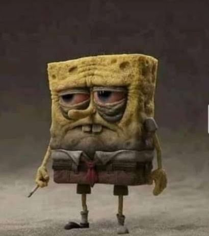

Worries in the Dance! La Liga refs strike again!
September 25, 2025 by Shevaunie

Real Madrid, one of, if not the best sporting institution in the universe were in action
this weekend against RCDE Espanyol at the the Estadio Santiago Bernabeu. While it started as drab affair,
Real Madrid got the go ahead goal through a ferocious strike from Eder Militao from the 20 yards out.
Despite Espanyol's attempts, Los Blancos remained in control and were barely tested. But despite a good performance
from Xabi Alonso's team, it was not without controversy from (you guessed it) the referee. Alvaro Carreras challenged an opposition
attacker from behind and received a yellow card for his troubles. A fair outcome if we madridistas were to be honest. But later in the half
an Espanyol player made almost the same challenge on our player and got away without even a warning. I'm happy that didn't stop us from winning
and hope we continue on this path.Now, I get that there will be good and bad referees in football, it's expected. What is unexpected however,
is all bad referees being in the same place or in this context, in the same league. La Liga referees are by far the worst ever. The number of
stoppages for "fouls" affects the flow of the game and the entertainment.
Another worry from the game is the role of our box to box falcon, and one of
my favourite players, Federico Valverde. He is less involved in the attack, and does more work moving the ball. I know we all love Fede, but I think
there is more to his game that needs to be unlocked. He has a good long range shot on him and excellent through passing. Both we haven't seen much of
this season. It's early days, yet we must keep our eye on our future captain. Let's not get started on Vinicius Junior, our best player (Mbappe lovers,
please see the exit). He seems to lack confidence and not beating players as much. His output is consitent, however he doesn't seem happy. When Vini
is happy, we are happy because we are sure of a win. I just hope he gets his spark back and resume the crucifiction of defences in Europe. It was a
good win. We were solid defensively, and I hope that we continue in the same manner. The goals will come and Barcelona will die next month.
We'll take the win madridistas, and the 3 points as we remain the same place the TV remote, coffee mug and bowl of snacks are,TOP of the Table!
Ramblings of a Madman - Life
September 22, 2025 by Shevaunie

Is life hard? The answer is a resounding yes. Is it that it's meant to be hard? Now that's a question that we all think about when we encounter
strenuous issues in life. We start life on what I call a "psuedo-easy" mode ages 2-12. This stage of life is a free trial for how difficult things can
get.Children beging to go through much in a short space of time here. The difference between them and adults is that they do not understand their
feelings and emotions. They are not yet in the frame of mind to process how they feel. The next stage is similar to a probationary period between ages
12-18. This is where the brain begins to process emotions, feelings and curating responses as a result of such sensations. This is where monsters,
angels and antiheros are made. Whatever is experienced in this stage of life is scarring, embedded in the psyche while slowly but permanently inking
these lessons and responses in the subconscious. But there are 2 to many people that are responsible for all stages. The parents, the family, the home,
the surrounding.
The parents, family, home and surroundings contribute to the lived experience of children and these facilities dictate the quality of adults that are
available to society. It can be said these four are directly and solely responsible for the society. It's similar to a tank that fills itself. But
whenever debri enters this closed loop, it is extremely difficult to correct. Broken homes beget broken homes. Behaviours passed down generation after
generation until it becomes the "culture". What makes life difficult is knowing the truth. The truth hurts, and you're forced to cope because no one
cares and change is a team effort. Learning truths to life often kills hope. To know your best efforts won't always be reward. For example, you top your
class, the best in your faculty. No let's take it even further. You're the best in the world at what you do, but you look back and still feel empty.
You focused so much on being the best, that you never looked outside of that. You didn't once stop to ask your self "am I enjoying this?" "why am I
really doing this?". Life is a slippery slope with chances playing wack-a-mole with you. Another example is dreaming. You dream of the love of your
life. You hug her, kiss her even make love. But then you wake up, force yourself to sleep, attempt to dream of her again, but she is gone forever.
There is the possibility that if you died while having that dream, you'd spend the rest of your life with her. The sad part is, you'll never know,
and the truth here? Most of what's in our heads isn't real.